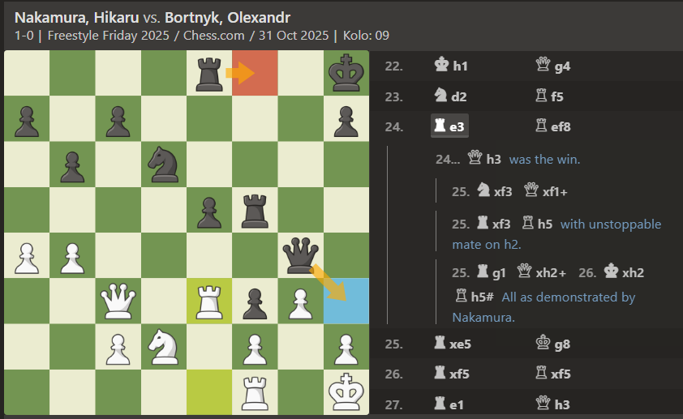

Americký šachový velmistr Hikaru Nakamura si na posledním říjnovém Freestyle Friday 2025 připsal další působivé vítězství. Turnaj, který se vyznačuje rychlým tempem, kreativními nápady a častým využíváním neobvyklých zahájení, tentokrát přilákal rekordní sledovanost i mimořádně silnou sestavu soupeřů. Nakamura však opět potvrdil, proč patří mezi nejlepší bleskovkové hráče světa.
Během úvodních kol si udržoval klid a jistotu ve vyrovnaných pozicích, a přestože několikrát čelil tlakům ambiciózních soupeřů, nikdy neztratil kontrolu nad tempem hry. Jeho styl byl tentokrát méně divoký než obvykle - místo extrémně rizikových variant se rozhodl pro pragmatickou strategii, založenou na stabilních pozicích a pečlivém využívání chyb protivníků.
Zlomovým momentem turnaje byla partie proti talentovanému mladíkovi, který si v posledních měsících získává mezinárodní pozornost. Nakamura se ocitl pod tlakem, ale díky přesné obraně a rychlému přechodu do protiútoku dokázal partii otočit a definitivně tak upevnil svou pozici v čele.
Závěrečné kolo už pouze potvrdilo jeho dominanci. I když měl již téměř jisté první místo, zvolil aktivní styl a vybojoval další výhru. Fanoušci po celém světě jeho výkon ocenili, a přenos turnaje se zařadil mezi nejsledovanější živé šachové streamy měsíce.
Nakamura po turnaji uvedl, že si atmosféru extrémně užil. V rozhovoru zmínil, že kombinace netradičních zahájení, rychlého tempa a komunitní atmosféry je přesně to, co ho na Freestyle Friday baví nejvíce. Tímto vítězstvím si navíc upevnil vedoucí pozici v dlouhodobém hodnocení celé série.
Turnaj z 31. října tak uzavírá jeden z nejsilnějších měsíců tohoto formátu vůbec. Očekává se, že Nakamura bude i nadále hlavní postavou celé série a jeho forma naznačuje, že další triumfy mohou být otázkou času.